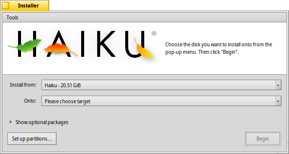

日本語
日本語 Français
Français Deutsch
Deutsch Italiano
Italiano Русский
Русский Español
Español Svenska
Svenska Українська
Українська 中文 ［中文］
中文 ［中文］ Português
Português English
EnglishInstaller
| Deskbarメニュー: | ||
| 場所: | /boot/system/apps/Installer | |
| 設定ファイル: | なし |
The Installer is used to copy Haiku onto another volume.
Upon launch it displays a start window with important information. It's not a mindless EULA you're used to click away in the blink of an eye, it states:
This is alpha-quality software. Make backups or suffer the consequences!
The Installer needs a prepared partition. You may have to use a GParted LiveCD or a similar tool until Haiku's DriveSetup is mature enough to handle this task.
Haiku can be added manually to the bootmanager GRUB. In short, you have add an entry to /boot/grub/menu.lst of your Linux installation, similar to this:
# Haiku on /dev/sda7 title Haiku rootnoverify (hd0,6) chainloader +1
Once you acknowledged with , you're presented with the main window:
In the first pop-up menu you choose the source for the installation. It can be a currently installed Haiku or can come from an install CD or USB drive, etc.
The second pop-up menu specifies the target for the installation. This target partition/volume will be completely overwritten and has to be set aside beforehand by a partitioning tool like GParted.
Clicking the little expander widget will Show optional packages, if available, that you can choose to install in addition to the basic Haiku.
You should do a last check if you really picked the right target before starting the installation process. Click on to open DriveSetup and have a look at the naming and layout of the available volumes and partitions.
starts the installation procedure, which basically copies everything but the home/ and common/ folder onto the target volume and makes it bootable.
 Tools
Tools
At the end of the installation procedure, the partition is automatically made bootable. However, it can happen that some other operating system or partitioning tool (accidentally) overwrites the boot sector of your Haiku volume. In this case, boot your installation CD and start the Installer. Select your Haiku boot partition from the menu and select from the menu to make it bootable again.
The other item in the menu is the that puts a menu in the boot sector to choose what operating system to boot.
You don't need to run the Boot Manager if you already use a bootmanager like Grub, in which case you have to add Haiku manually (see above), or Haiku runs exclusively on your machine.
Boot Manager isn't yet tested very well and still has a few restrictions that it will complain about if they aren't met: the menu can only be installed on your first harddisk and there has to be a 2KiB space after the Master Boot Record (MBR).
You don't have to worry too much, however, the original MBR is saved. In order to uninstall the boot menu, you'll just boot from the install CD again, run the Installer and invoke the Boot Manager once more.
The Boot Manager panel will guide you through installing or uninstalling the boot menu.